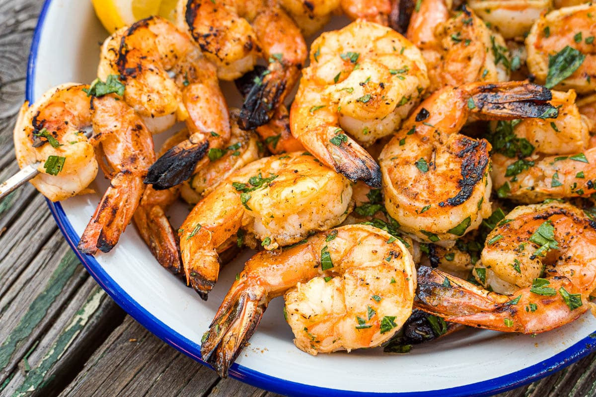

Grilled Garlic and Herb Shrimp

Description
This is an easy recipe to prep for grilled shrimp using a marinade made with fresh garlic, lemon juice, olive oil, Italian herb seasoning, brown sugar, and paprika. Every time I make it I have people begging me for the recipe.
Zesty, succulent shrimp is simple to make from the comfort of home. Try this mouthwatering grilled shrimp recipe made with brown sugar, basil, and a host of Italian seasonings for an irresistible seafood experience.
Ingredients
- 2 teaspoons ground paprika
- 2 tablespoons fresh minced garlic
- 2 teaspoons Italian seasoning, or to taste
- 2 tablespoons fresh lemon juice
- 1/4 cup olive oil
- 1/2 teaspoon ground black pepper
- 2 teaspoons dried basil leaves
- 2 tablespoons brown sugar, packed
- 2 pounds large shrimp (21-25 per pound), peeled and deveined
Directions
- Whisk the paprika, garlic, Italian seasoning, lemon juice, olive oil, pepper, basil, and brown sugar together in a bowl until thoroughly blended.
- Stir in the shrimp, and toss to evenly coat with the marinade. Cover and refrigerate at least 2 hours, turning once.
- Preheat an outdoor grill for medium-high heat. Lightly oil grill grate, and place about 4 inches from heat source.
- Remove shrimp from marinade, drain excess, and discard marinade.
- Place shrimp on preheated grill and cook, turning once, until opaque in the center, 5 to 6 minutes. Serve immediately.